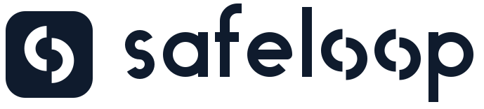
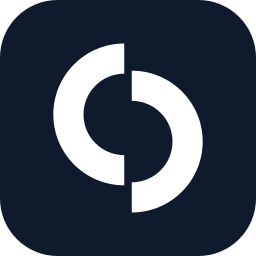
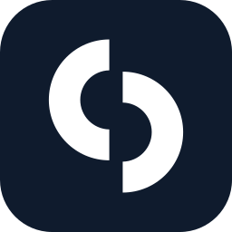

Açık zemin · lacivert kutu + lacivert wordmark

600 px · lockup-box.svg

200 px · lockup-box-small.svg
120 px
Ana renk Lacivert #0F1B2D. 600 px ana kesim (lockup-box) · 200 / 120 px küçük kesim (lockup-box-small).







